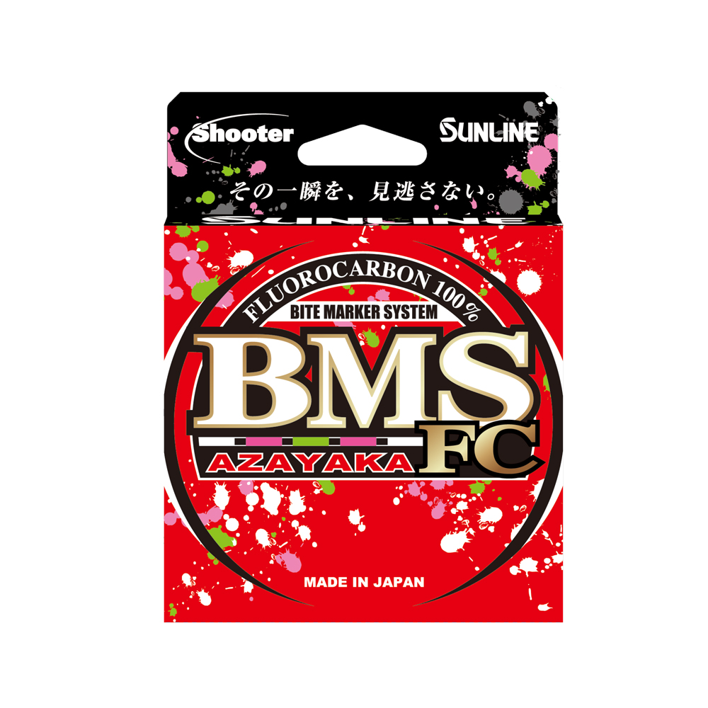

Sunline BMS Azayaka FC Fluorocarbon
Diameter chart, reel capacity & backing guide

Shooter BMS Azayaka FC is fluorocarbon main line with contrasting markings for watching line movement. This guide covers the version launched in May 2026, with 80-meter and 320-meter packages. Choose a strength to compare diameter, reel capacity and working length.
- Construction
- 100% fluorocarbon; colored Bite Marker System
- Listed strengths
- 3-20 lb
- Line type
- Fluorocarbon main line
Is BMS Azayaka FC right for your setup?
BMS Azayaka FC is useful to consider when you watch the line for movement during a retrieve or pause. Its contrasting markings provide a visual reference while retaining a fluorocarbon main-line setup. Choose a diameter your reel manages comfortably and check the package length against your working-line needs, including spare line for retying.
How much BMS Azayaka FC will fit?
Calculated estimates, not measured fills. Stop at the reel manufacturer's fill level even if some line remains.
Sunline Shooter BMS Azayaka FC diameter chart
May 2026 JDM/official English product version, 80 and 320 meters. Inch diameters and yard lengths are converted from the metric source.
| Strength | Inches | mm | Spools (m / yd) |
|---|---|---|---|
| 0.005827 | 0.148 | 80 m (about 87.49 yd), 320 m (about 349.96 yd) | |
| 0.006496 | 0.165 | 80 m (about 87.49 yd), 320 m (about 349.96 yd) | |
| 0.00748 | 0.190 | 80 m (about 87.49 yd), 320 m (about 349.96 yd) | |
| 0.008071 | 0.205 | 80 m (about 87.49 yd), 320 m (about 349.96 yd) | |
| 0.009252 | 0.235 | 80 m (about 87.49 yd), 320 m (about 349.96 yd) | |
| 0.010236 | 0.260 | 80 m (about 87.49 yd), 320 m (about 349.96 yd) | |
| 0.01122 | 0.285 | 80 m (about 87.49 yd), 320 m (about 349.96 yd) | |
| 0.012205 | 0.310 | 80 m (about 87.49 yd), 320 m (about 349.96 yd) | |
| 0.012992 | 0.330 | 80 m (about 87.49 yd), 320 m (about 349.96 yd) | |
| 0.01378 | 0.350 | 80 m (about 87.49 yd), 320 m (about 349.96 yd) | |
| 0.014567 | 0.370 | 80 m (about 87.49 yd), 320 m (about 349.96 yd) |
Choosing your BMS Azayaka FC strength
The current fluorocarbon range runs from 3 to 20 lb. The light 3 lb entry is .148 mm, while 8 lb is .235 mm. These are materially different spool-space choices even though both can appear in discussions of finesse fishing.
The FC suffix matters. BMS Azayaka NY is a different nylon line and should not be selected merely because the package has similar colors or the same pound-test label.
For a short marked working section over backing, include reserve for retying. Otherwise the useful colored section can become too short even though the spool still looks adequately filled.
This is a specification-based setup guide, not a hands-on BMS Azayaka FC performance test.
Want a guided recommendation?
Continue in the Setup WizardSame pound test, different diameters
At your selected strength
Loading diameter comparisons...
What changes with another line?
Nearby diameters in the line database
| Line | Strength | Inches | Difference |
|---|---|---|---|
| Loading line database... | |||
Backing, working line & leaders
80 meters is a working-length decision
An 80-meter package contains about 87.5 yards. Check that amount against casting distance, runs, and future trimming before using the remaining reel space for backing.
Use the current bulk length
The 2026 bulk package is 320 meters, or four 80-meter sections. Do not assume an older 300-meter package contains the same amount. Check which version a retailer is selling.
Do not confuse markings with a measurement test
The one-meter marking cycle can provide a rough distance reference. Winding tension, knots, and removed sections still affect the usable amount. Watch the reel's fill level during the final winding.
How Much Fits on These Reels?
Estimated full-spool capacity for the BMS Azayaka FC strength selected above, with no backing. These are calculated examples, not physical tests or recommendations for every pairing.
Loading capacity estimates...
BMS Azayaka FC questions, answered
Is BMS Azayaka FC only leader material?
No. This is fluorocarbon main line with a Bite Marker System. If it is used only as a short leader on braid, calculate the reel's working fill with the braid instead.
What changed in the version covered here?
The current source identifies a May 2026 version with a contrasting marking system and an 80/320-meter package range. This page does not silently apply those package sizes to older stock.
Why does the calculator show about 87.5 yards?
That is the yard equivalent of the selected 80-meter retail package. It is the amount available, not a promise that the entire package should be wound onto every reel.
Specifications & sources
Specifications checked 2026-09-13. Current JDM product. Inch diameter and yard lengths converted from published metric specifications. Check the actual package when buying older or imported stock. Product imagery identifies the model, not every selectable strength.
Calculations use the catalog's listed inch diameters. Published inch and millimeter values may differ slightly because of rounding.
- Official Sunline BMS Azayaka FC specifications Manufacturer material, strength, diameter, and package evidence.